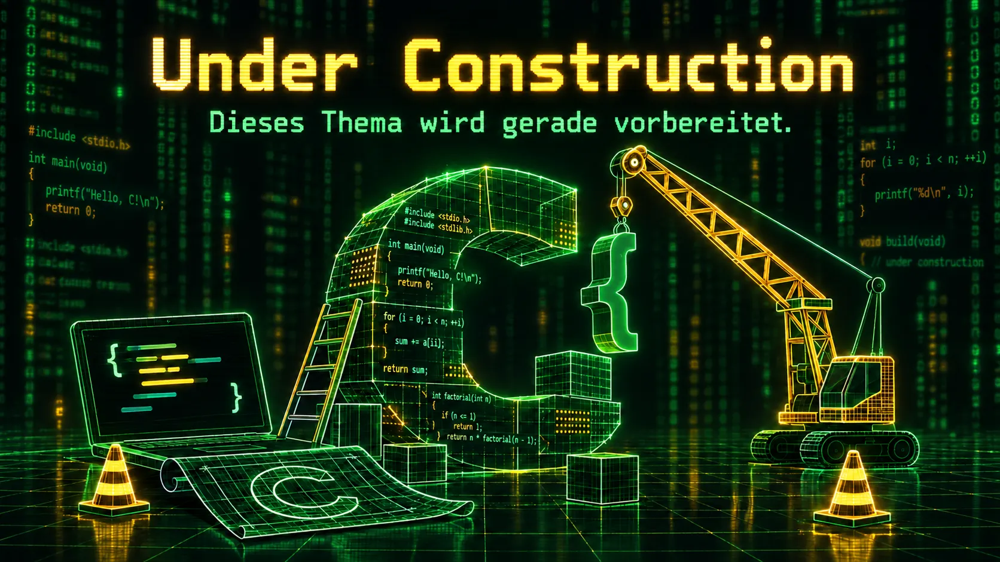

For-Schleifen
In Vorbereitung
Diese Inhalte sind noch in Vorbereitung. Bitte arbeiten Sie zunächst an den bereits veröffentlichten Aufgaben weiter.

Diese Inhalte sind noch in Vorbereitung. Bitte arbeiten Sie zunächst an den bereits veröffentlichten Aufgaben weiter.